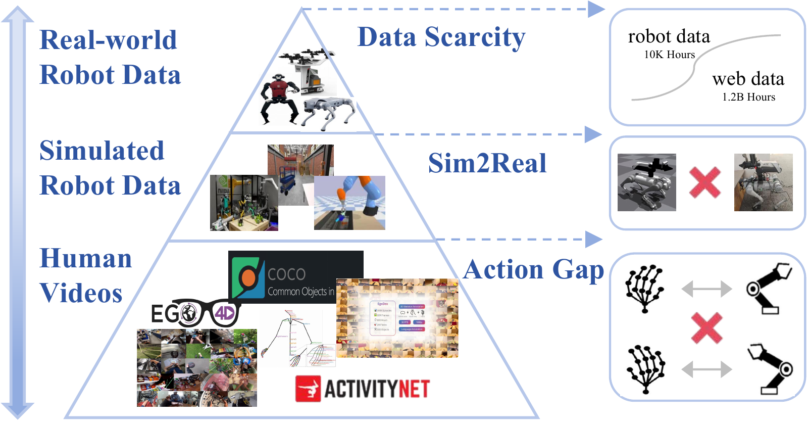
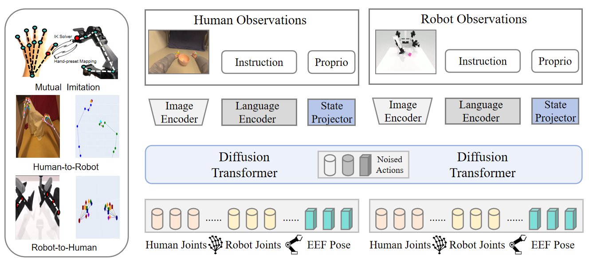
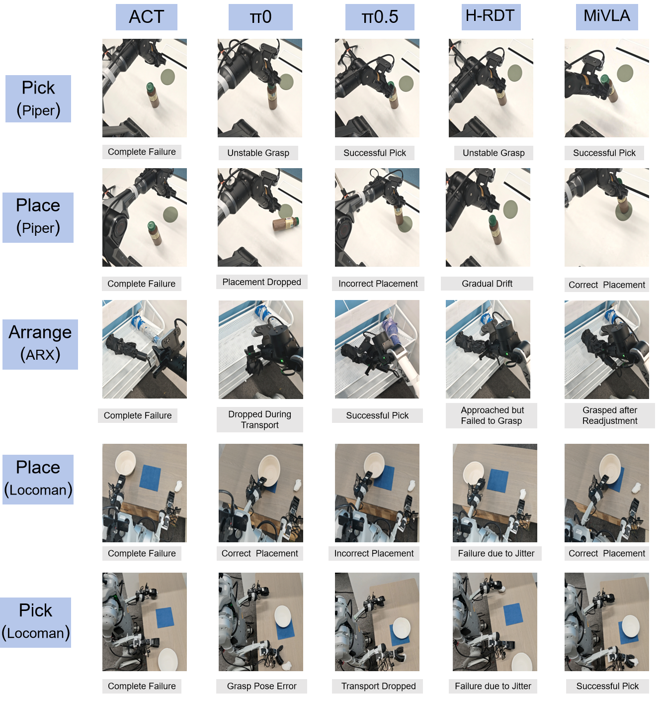

Human videos
Real-world scenes and natural task behavior, with a substantial gap between hands and robot arms.
Real-world behaviorROBOT LEARNING / RESEARCH PROJECT
A vision-language-action model that uses mutual imitation to connect human videos with simulated robot demonstrations.
Towards Generalizable Vision-Language-Action Model with Human-Robot Mutual Imitation Pre-training
CVPR 2026
Tongji University University of Electronic Science and Technology of China
Pre-training draws on human and simulated robot data. Real-world evaluation includes task-specific fine-tuning.
01 / WHY IT MATTERS
Real robot demonstrations are expensive to collect at scale. Simulation offers broad manipulation experience, while human videos capture everyday behavior in real scenes. MiVLA learns from both while bridging their different appearances and action spaces.

Real-world scenes and natural task behavior, with a substantial gap between hands and robot arms.
Real-world behaviorScalable robot action trajectories and diverse manipulations, with a gap between simulation and reality.
Robot control priorsConvert actions in both directions so each demonstration can supervise behavior across embodiments.
MiVLA's bridge02 / THE APPROACH
MiVLA converts a demonstrated action into a complementary action for another embodiment. A shared policy then learns the original trajectory and the converted trajectory together.

Map relative human hand motion to a robot end-effector target, then solve for robot joint positions with inverse kinematics.
Use the robot end-effector as a hand reference and estimate the remaining finger positions from anatomical priors.
Train on the demonstrated action and its converted counterpart for both human and simulated robot observations.
03 / EVALUATION
The paper evaluates MiVLA on RoboTwin-2.0 and three real robot tasks. The figures below use the reported success rates, with each comparison's scope stated explicitly.
Mean over the 20 tasks in Table 1. On all 50 tasks, MiVLA reports 62.0% easy and 63.6% hard success (Table A1).
MiVLA mean full-task success
π0.5: 54% · Table 2
| Task / robot | π0.5 | MiVLA |
|---|---|---|
| Bottle onto pad PiPER | 66% | 54% |
| Umbrella rack ARX-5 | 75% | 60% |
| Gather objects LocoMan | 20% | 50% |
Each real task uses 30 robot demonstrations for task-specific fine-tuning. MiVLA leads on LocoMan; π0.5 leads on the two single-arm tasks.
RoboTwin-2.0 success rate from Table 3. The intermediate human-only pre-training setting is 43%.
04 / IN ACTION
Qualitative examples from the paper compare grasping, placing, and arrangement across baselines and robot platforms.

05 / VIDEO DEMONSTRATION
Watch the project demonstration across human–robot transfer, simulated training, and physical manipulation.
Open video file06 / REFERENCE
MiVLA appeared at CVPR 2026. The BibTeX below cites the publicly available preprint.
@article{yin2025mivla,
title={MiVLA: Towards Generalizable Vision-Language-Action Model with Human-Robot Mutual Imitation Pre-training},
author={Yin, Zhenhan and Wang, Xuanhan and Jiang, Jiahao and Deng, Kaiyuan and Chen, Pengqi and Li, Shuangle and Liu, Chong and Xu, Xing and Song, Jingkuan and Gao, Lianli and Shen, Heng Tao},
journal={arXiv preprint arXiv:2512.15411},
year={2025}
}